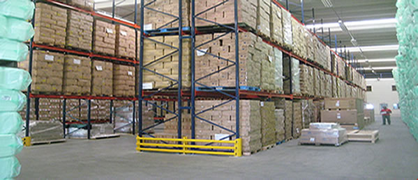

Cada caminho novo é uma
Conquista neste
Brasil.
Segurança

Fundada em 5º de março de 1999, a Intermodal Log, traça a cada dia um caminho melhor de dedicação e confiabilidade no meio de transporte de cargas. A busca pela qualidade total unida àtecnologia garantem uma completa estrutura para atender tanto o mercado nacional quanto internacional. São mais de 28 anos de dedicação e esforço para garantir um serviço de ótima qualidade e satisfação para seus clientes,Atendemos todo mercado nacional e também realizamos transporte..
Intermodal Log

A Transportadora Intermodal possui equipamentos de carga que seguem as altas inovações tecnológicas de seus fabricantes. A frota é equipada com sistema de refrigeração e blindagem de seus cofres além do rastreamento sobre bloqueio do veículo caso for solicitada.
o que garante maior agilidade e segunça da qualidade na carga e descarga dos produtos.
INTERMODAL LOG
Qualidade reconhecida em todo território nacional
Nossas estruturas
* Os pilares de uma estrutura encorpada para suportar grandes resultados!
* Com rotas em todas as cidades do Brasil
* Consolidada que garante o funcionamento de todas as operações:
* Frota própria; 48 Bases e 27 localidades atendidas;
* Representantes em todas as localidades do Brasil;
* Postos avançados no cliente;
* Profissionais treinados;
* Gerenciamento de risco;
* Rastreamento via satélite e GPRS;
* Monitoramento 24h.
Diferencial
Empresa que visa totalmente a prioridade de
seus clientes, Não apenas como obrigação de
contrato, Mais sim como satisfação em atender
sempre as necessidades de nossos clientes,
Além de da ótima estrutura, Em suma possui
profissionais rigorosamentes qualificados para o
melhor atende-lo, Preço justo e segurança é
primordial para nossa empresa continuar sempre
melhorando a cada vez mais, Cada estrada nova
é um novo desafio neste Brasil.